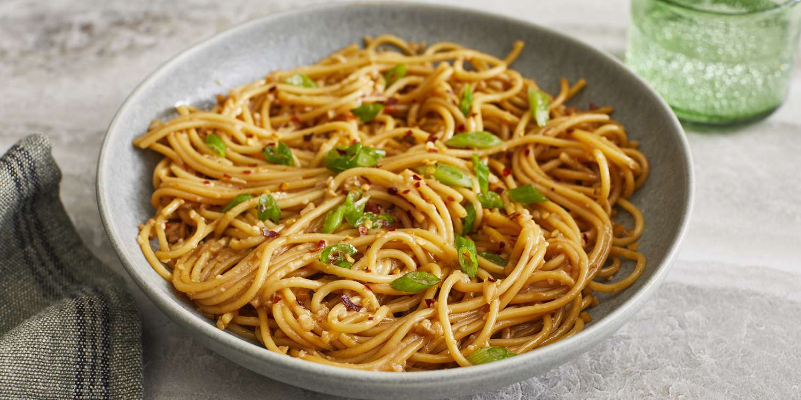

Buttered Noodles

Description
Buttered noodles are simple to make with your favorite pasta, butter, Parmesan cheese, salt, and pepper for a quick and easy, kid-friendly dish.
Ingredients
- 1 (16 ounce) package fettuccine noodles
- 6 tablespoons butter, cut into pieces
- ⅓ cup grated Parmesan cheese
- salt and ground black pepper to taste
Steps
- Gather all ingredients.
- Fill a large pot with lightly salted water and bring to a rolling boil.
- Stir in fettuccine, bring back to a boil, and cook pasta over medium heat until tender yet firm to the bite, 8 to 10 minutes.
- Drain and return pasta to pot. Mix butter, Parmesan cheese, salt, and pepper into pasta until evenly combined.
- Serve hot and enjoy!
Return to Home